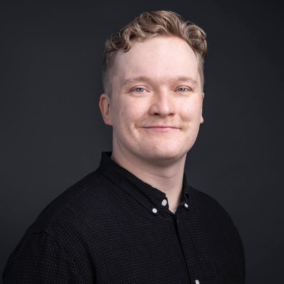
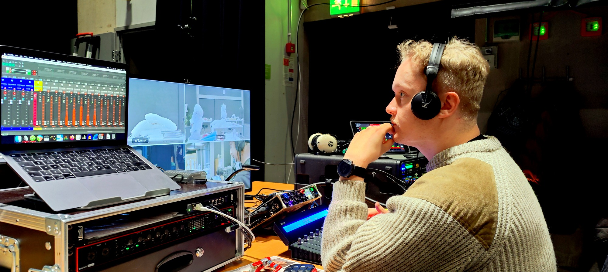
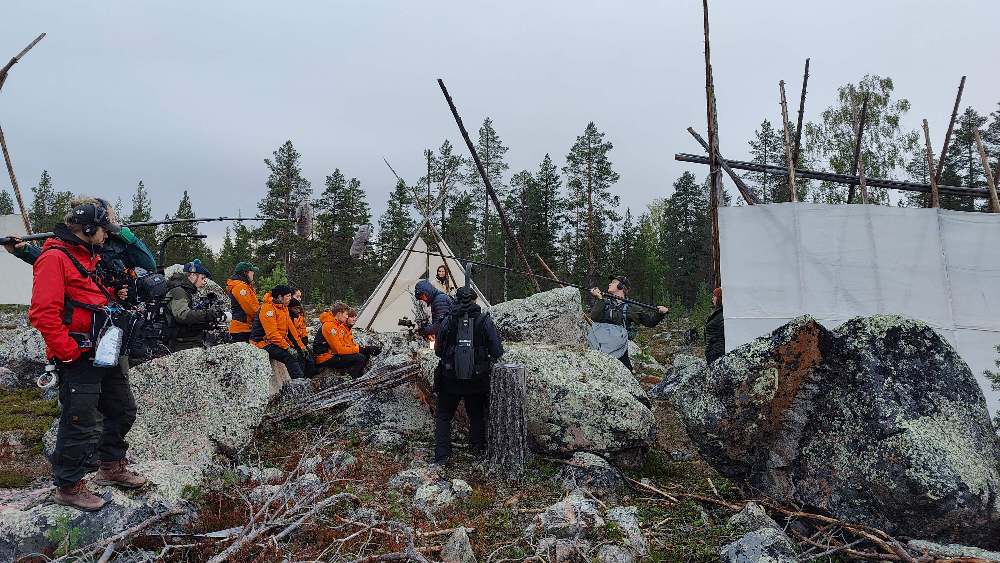
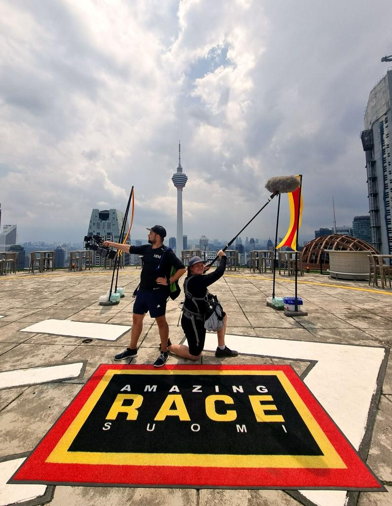

Moikka olen Klasu.
Intohimona ääni ja sisältö.

Televisio-ohjelmien kulissit ovat tarjonneet minulle ikimuistoisia hetkiä ja hienoja onnistumisen kokemuksia.

Painotan työnjäljessäni hyvää fiilistä, tunnollista valmistautumista ja selkeää kommunikointia.

Tehtäisiinkö seuraava tuotanto yhdessä?